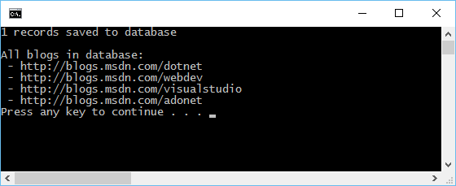

Внимание
Эта документация для EF Core. Для EF6.x и более ранних версий смотрите http://msdn.com/data/ef.
Консольное приложение для существующей базы данных (Database First)¶
В этом пошаговом руководстве вы создадите консольное приложение, которое совершает базовый доступ к данным в базе данных Microsoft SQL Server, с помощью Entity Framework. Для создания модели Entity Framework вы будете использовать обратное проектирование на основе существующей базы данных.
В этой статье:
Совет
Вы можете посмотреть пример для этой статьи на GitHub.
Необходимые условия¶
Для продолжения необходимы следующие условия:
- Visual Studio 2015 Update 3
- Последняя версия NuGet Package Manager
- Последняя версия Windows PowerShell
- База данных Blogging
База данных Blogging¶
Этот учебник в качестве текущей использует базу данных Blogging вашего экземпляра LocalDb.
Примечание
Если вы уже создали базу данных Blogging как часть другого учебного пособия, то можете пропустить этот шаг.
- Откройте Visual Studio
- Выберите Microsoft SQL Server и нажмите Продолжить
- Введите (localdb)\mssqllocaldb в качестве Имя сервера
- Введите master в качестве Имя базы данных и нажмите OK
- База данных master теперь показывается в разделе Data Connections в Server Explorer
- Щелкните правой кнопкой мыши на Server Explorer и выберите New Query
- Скопируйте скрипт показанный ниже в редактор запросов
- Щелкните правой кнопкой мыши на редакторе и выберите Execute
1 2 3 4 5 6 7 8 9 10 11 12 13 14 15 16 17 18 19 20 21 22 23 24 25 26 27 28 | CREATE DATABASE [Blogging]
GO
USE [Blogging]
GO
CREATE TABLE [Blog] (
[BlogId] int NOT NULL IDENTITY,
[Url] nvarchar(max) NOT NULL,
CONSTRAINT [PK_Blog] PRIMARY KEY ([BlogId])
);
GO
CREATE TABLE [Post] (
[PostId] int NOT NULL IDENTITY,
[BlogId] int NOT NULL,
[Content] nvarchar(max),
[Title] nvarchar(max),
CONSTRAINT [PK_Post] PRIMARY KEY ([PostId]),
CONSTRAINT [FK_Post_Blog_BlogId] FOREIGN KEY ([BlogId]) REFERENCES [Blog] ([BlogId]) ON DELETE CASCADE
);
GO
INSERT INTO [Blog] (Url) VALUES
('http://blogs.msdn.com/dotnet'),
('http://blogs.msdn.com/webdev'),
('http://blogs.msdn.com/visualstudio')
GO
|
Создание нового проекта¶
- Откройте Visual Studio 2015
- В левом столбце выберите:
- Выберите шаблон проекта Console Application
- Убедитесь, что выбрана версия .NET Framework 4.5.1 или выше
- Дайте проекту имя и нажмите кнопку OK
Установка Entity Framework¶
Чтобы использовать EF Core, установите пакет провайдера базы данных, для которой вы хотите настроить таргетинг. Это пошаговое руководство использует SQL Server. Список доступных провайдеров Провайдеры баз данных.
- Run
Install-Package Microsoft.EntityFrameworkCore.SqlServer
Чтобы включить обратный инжиниринг из существующей базы данных нам так же нужно установить несколько других пакетов.
- Выполните команду
Install-Package Microsoft.EntityFrameworkCore.Tools –Pre - Выполните команду
Install-Package Microsoft.EntityFrameworkCore.SqlServer.Design
Обратный инжиниринг вашей модели¶
Теперь пришло время для создания модели EF, основываясь на существующей базе данных.
- Для того, чтобы создать модель из текущей базы данных, выполните следующую команду
Scaffold-DbContext "Server=(localdb)\mssqllocaldb;Database=Blogging;Trusted_Connection=True;" Microsoft.EntityFrameworkCore.SqlServer
Процесс обратного инжиниринга создал классы сущностей и производный контекст, основанный на схеме существующей базы данных. Классы сущностей - это простые объекты C #, которые представляют данные, которые вы собираетесь запрашивать и сохранять.
1 2 3 4 5 6 7 8 9 10 11 12 13 14 15 16 17 18 | using System;
using System.Collections.Generic;
namespace EFGetStarted.ConsoleApp.ExistingDb
{
public partial class Blog
{
public Blog()
{
Post = new HashSet<Post>();
}
public int BlogId { get; set; }
public string Url { get; set; }
public virtual ICollection<Post> Post { get; set; }
}
}
|
Контекст представляет собой сеанс связи с базой данных и позволяет запрашивать и сохранять экземпляры классов сущностей.
1 2 3 4 5 6 7 8 9 10 11 12 13 14 15 16 17 18 19 20 21 22 23 24 25 26 27 28 29 30 31 32 | using Microsoft.EntityFrameworkCore;
using Microsoft.EntityFrameworkCore.Metadata;
namespace EFGetStarted.ConsoleApp.ExistingDb
{
public partial class BloggingContext : DbContext
{
protected override void OnConfiguring(DbContextOptionsBuilder optionsBuilder)
{
#warning To protect potentially sensitive information in your connection string, you should move it out of source code. See http://go.microsoft.com/fwlink/?LinkId=723263 for guidance on storing connection strings.
optionsBuilder.UseSqlServer(@"Server=(localdb)\mssqllocaldb;Database=Blogging;Trusted_Connection=True;");
}
protected override void OnModelCreating(ModelBuilder modelBuilder)
{
modelBuilder.Entity<Blog>(entity =>
{
entity.Property(e => e.Url).IsRequired();
});
modelBuilder.Entity<Post>(entity =>
{
entity.HasOne(d => d.Blog)
.WithMany(p => p.Post)
.HasForeignKey(d => d.BlogId);
});
}
public virtual DbSet<Blog> Blog { get; set; }
public virtual DbSet<Post> Post { get; set; }
}
}
|
Использование модели¶
Теперь можно использовать модели для выполнения доступа к данным.
- Откройте файл Program.cs
- Замените содержимое файла следующим кодом
1 2 3 4 5 6 7 8 9 10 11 12 13 14 15 16 17 18 19 20 21 22 23 24 | using System;
namespace EFGetStarted.ConsoleApp.ExistingDb
{
class Program
{
static void Main(string[] args)
{
using (var db = new BloggingContext())
{
db.Blog.Add(new Blog { Url = "http://blogs.msdn.com/adonet" });
var count = db.SaveChanges();
Console.WriteLine("{0} records saved to database", count);
Console.WriteLine();
Console.WriteLine("All blogs in database:");
foreach (var blog in db.Blog)
{
Console.WriteLine(" - {0}", blog.Url);
}
}
}
}
}
|
Вы увидите, что один блог сохраняется в базе данных и затем детали всех блогов выводятся на консоль.
